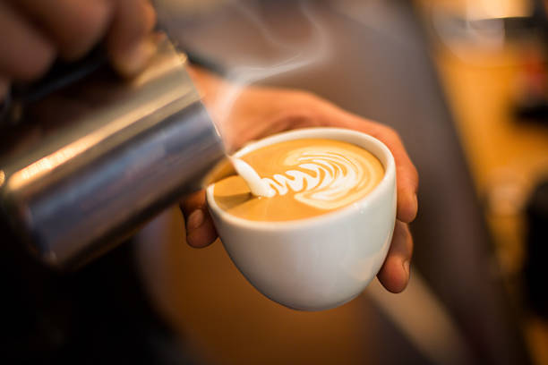

El olor al café, a unos granos recién tostados, es la mejor bienvenida que cada día planificamos para brindarles cuando abrimos las puertas de nuestras tiendas. Pero eso es sólo el comienzo.

De cuerpo entero, un poco ahumado, con notas cítricas, con fuerte presencia de chocolate…el desafío que tenemos constantemente es que cada uno de nuestros clientes encuentre su mezcla favorita y a la vez, que explore nuestras amplias selecciones más singulares. Para alcanzarlo nos abastecemos de los mejores granos de café arábicos siguiendo siempre estrictos principios éticos.
Cada café que ofrecemos exige un perfil de tostado único para crear una taza con el máximo aroma, acidez, cuerpo y sabor. Al trabajar en un delicado balance en calor, tiempo y arte, nuestros maestros en el tostado hacen resaltar estas únicas características de cada grano de café.
Desde el cultivo responsable hasta el tostado, cada detalle en la elaboración de manera artesanal es fundamental para poder disfrutar de una taza de café . Y además de la esencia de los granos, sabemos que la forma en la que se prepara el café tiene un efecto sorprendente en el sabor de cada taza y define su cuerpo. Es por eso que nuestros magníficos baristas se enfocan en crear diariamente rituales escogiendo diferentes métodos de preparación para que sean nuestros clientes quienes se sorprenden. Así, de la mano de las explicaciones de nuestros expertos, no sólo cultivarán la curiosidad sino que podrán seleccionar el mejor método para su experiencia.